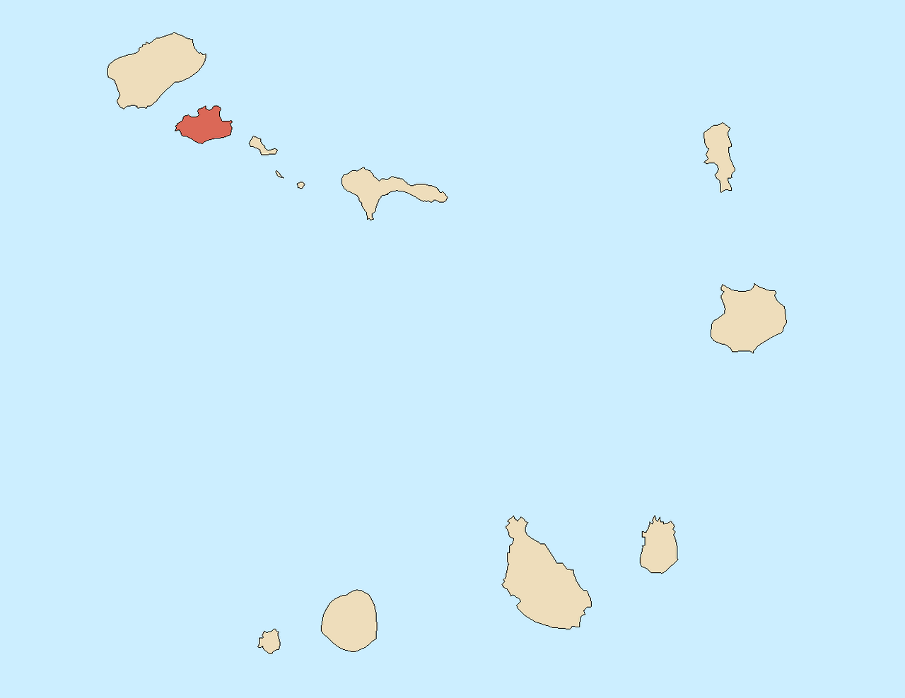

Cabo Verde
São Vicente Island
Cabo Verde é um Estado insular situado no Oceano Atlântico, composto por dez ilhas e vários ilhéus. Com uma área total de 4.033 km², o arquipélago divide-se em dois grupos principais: Barlavento (Santo Antão, São Vicente, Santa Luzia, São Nicolau, Sal e Boa Vista) e Sotavento (Maio, Santiago, Fogo e Brava).
Descoberto e colonizado por navegadores portugueses no século XV, o país tornou-se independente em 1975 e transformou-se numa das democracias mais estáveis do continente africano. A sua posição estratégica entre a Europa, África e as Américas contribuiu historicamente para uma identidade única — marcada pela mestiçagem, pela resiliência e pelo espírito da morabeza.
O clima é seco e árido, temperado pela influência marítima, com praias de areia branca e fina, águas cristalinas e paisagens vulcânicas de beleza singular.


Funaná & Batuque
A música é a alma de Cabo Verde. Nascida da saudade, do mar e da diáspora, atravessa fronteiras e emociona o mundo inteiro. Da melancolia da morna ao ritmo festivo do funaná, cada género é uma forma de contar a história de um povo resiliente e apaixonado.
O batuque, originário de Santiago, é simultaneamente música, dança e ritual — declarado Património Cultural Imaterial pela UNESCO.
Povo & Comunidade
A sociedade santiaguense é marcada pela morabeza — o espírito de hospitalidade e acolhimento único cabo-verdiano. Com uma população de mais de 300 mil habitantes, Praia é a maior cidade do arquipélago e o seu centro político, económico e cultural.
A forte tradição comunitária e a diáspora espalhada pelo mundo mantêm vivos os laços culturais e reforçam a identidade nacional.
Herança & Identidade
Santiago concentra a maior riqueza histórica do arquipélago. A Cidade Velha, primeira cidade europeia nos trópicos, testemunha cinco séculos de história marcados pelo encontro de culturas africanas e europeias.
A gastronomia, as tradições religiosas e os festivais locais reflectem essa fusão única — uma identidade crioula forjada entre dois mundos.
Melhores Atrações em Santiago
Descubra os locais mais visitados da ilha

Tarrafal Beach
A vila foi nomeada Tarrafal em homenagem a uma planta chamada tarrafal cabo-verdiano. A vila do Tarrafal tem poucas ruas mas muita hospitalidade.

Serra de Malagueta
O Parque Natural da Serra Malagueta faz parte da rede nacional de áreas protegidas e é considerado o "pulmão" da ilha de Santiago.

Mercado de Sucupira
Um passeio imperdível e cheio de maravilhosos produtos de África. Tecidos lindos, artesanato, porco, galinha e muito mais.

Cidade Velha
Primeira cidade europeia nos trópicos e Património Mundial da UNESCO. Ruínas, fortaleza e história em cada esquina.

Praia Kebra Canela
Águas cristalinas e areia branca. Perfeita para relaxar e praticar desportos náuticos.

Fortaleza Real de São Filipe
Pequeno ilhéu ao largo da costa, perfeito para mergulho e observação de aves marinhas.